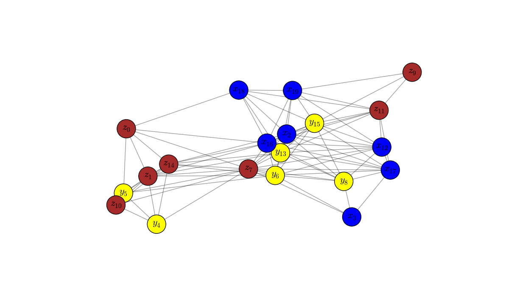
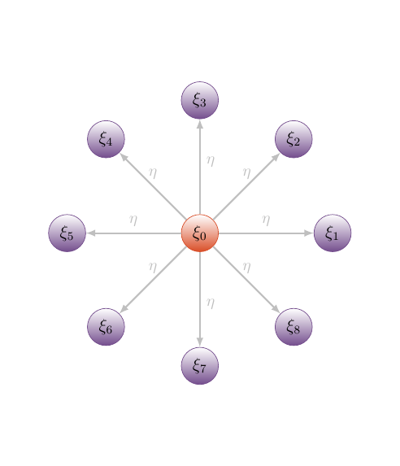
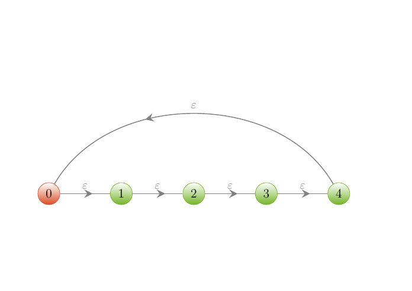

Networkx
You can use the Networkx library to draw some nice graphs. This powerful library is also a tool for algorithms.

A three colors graph
Here is the
python
code to obtain the figure.
#!/usr/bin/env python3.4
"""
How to draw a three colors graph with Python
"""
# Scientific libraries
import matplotlib.pyplot as plt
import networkx as nx
import random
# Number of nodes
N = 20
G = nx.random_geometric_graph(N, 0.4)
pos = nx.get_node_attributes(G, 'pos')
# Colors
c = []
for i in range(nx.number_of_nodes(G)):
c = c + [random.randint(1,3)]
if c[i]==1: c[i] = 'blue'
elif c[i]==2: c[i] = 'yellow'
else: c[i] = 'brown'
# Labels
labels = {}
for i in range(len(c)):
if c[i]=='blue': labels[i] = r"$x_{"+str(i)+"}$"
elif c[i]=='yellow': labels[i] = r"$y_{"+str(i)+"}$"
else: labels[i] = r"$z_{"+str(i)+"}$"
# Figure
plt.figure(figsize=(12,7))
nx.draw_networkx_edges(G,
pos,
nodelist=[0],
alpha=0.4,
arrows=True,)
nx.draw_networkx_nodes(G,
pos,
node_size=1000,
node_color=c)
nx.draw_networkx_labels(G,
pos,
labels,
font_size=16)
plt.axis('off')
plt.show()
TikZ
Alternatively, you can use TikZ. Here are some examples.

A star configuration graph
\tikzstyle{circle1} = [circle,
draw,
blue!40!brown,
bottom color=blue!40!brown,
top color= white,
text=black]
\tikzstyle{circle2} = [circle,
draw,
red!40!brown,
bottom color=red!40!brown,
top color= white,
text=black]
\begin{tikzpicture}[scale=0.8]
\clip (-6,-7) rectangle (6,7);
\node[circle2] (n0) at (0,0) {$\xi_0$};
\node[circle1] (n1) at (4,0) {$\xi_1$};
\node[circle1] (n2) at (2*1.414,2*1.414) {$\xi_2$};
\node[circle1] (n3) at (0,4) {$\xi_3$};
\node[circle1] (n4) at (-2*1.414,2*1.414) {$\xi_4$};
\node[circle1] (n5) at (-4,0) {$\xi_5$};
\node[circle1] (n6) at (-2*1.414,-2*1.414) {$\xi_6$};
\node[circle1] (n7) at (0,-4) {$\xi_7$};
\node[circle1] (n8) at (2*1.414,-2*1.414) {$\xi_8$};
\foreach \i in {n1, n2, n4, n5, n6, n8}
\draw[>=latex,->, very thick, gray!50] (n0) to node [pos=0.5,above]{\small $\eta$}(\i);
\foreach \i in {n3, n7}
\draw[>=latex,->, very thick, gray!50] (n0) to node [pos=0.55,right]{\small $\eta$}(\i);
\end{tikzpicture}

A feedback-loop configuration graph
\usetikzlibrary{arrows,shapes,positioning}
\usetikzlibrary{arrows,calc,shapes,decorations.pathreplacing}
\usetikzlibrary{decorations.markings,decorations.pathmorphing,decorations.pathreplacing}
\usetikzlibrary{calc,patterns,shapes.geometric}
\tikzstyle arrowstyle=[scale=1.9]
\tikzstyle directed=[postaction={decorate,decoration={markings,mark=at position .65 with {\arrow[arrowstyle]{stealth}}}}]
\tikzstyle{greencircle} = [circle,
draw,
green!40!brown,
bottom color=green!40!brown,
top color= white,
text=black]
\tikzstyle{redcircle} = [circle,
draw,
red!40!brown,
bottom color=red!40!brown,
top color= white,
text=black]
\begin{tikzpicture}[scale=0.8]
\clip (-2,-4) rectangle (15,8);
\node[redcircle] (n0) at (0,0) {$0$};
\node[greencircle] (n1) at (3,0) {$1$};
\node[greencircle] (n2) at (6,0) {$2$};
\node[greencircle] (n3) at (9,0) {$3$};
\node[greencircle] (n4) at (12,0) {$4$};
\foreach \i/\j in {0/1, 1/2, 2/3, 3/4}
\draw[directed, gray, thick] (n\i) to node [pos=0.5,above]{\small $\varepsilon$}(n\j);
\draw[directed, gray, thick] (n4) [out=120, in=60] to node [pos=0.5,above]{\small $\varepsilon$} (n0);
\end{tikzpicture}